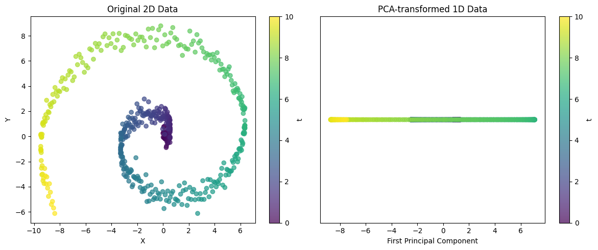
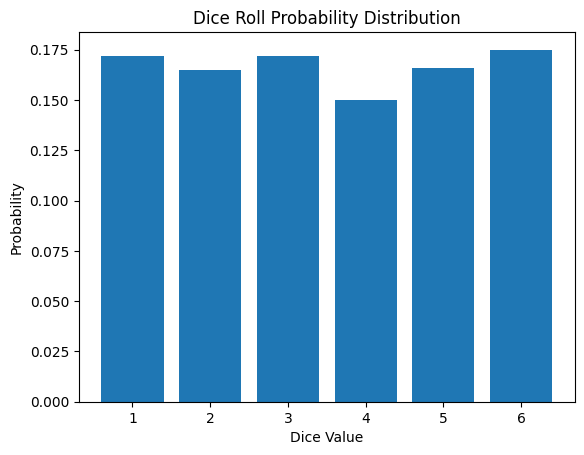
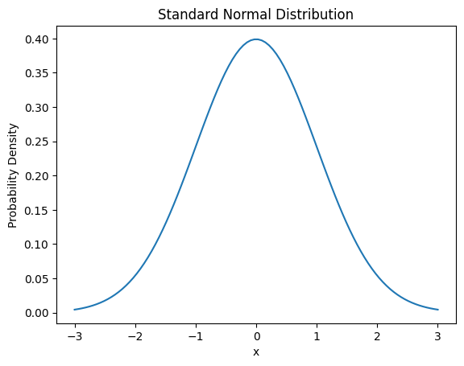
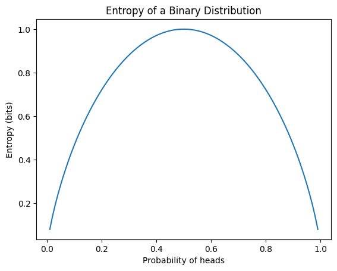
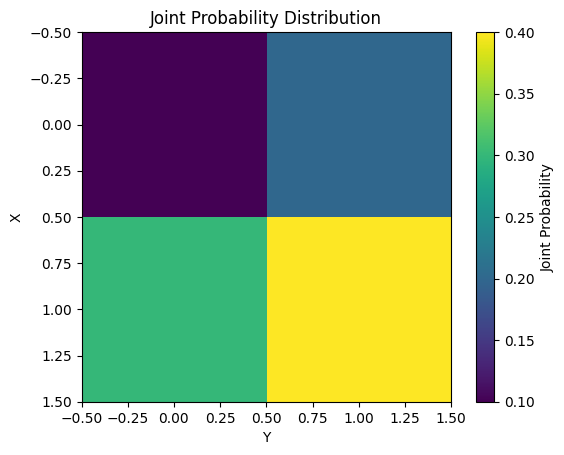
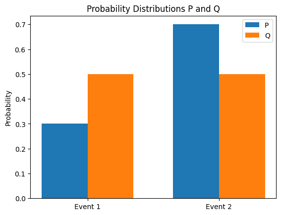

Code
!pip install dldna[colab] # in Colab
# !pip install dldna[all] # in your local 
“所有的数都是由单位组成的，所有的数都可以被分解为单位” - 阿尔-花拉子米 (780-850)，波斯数学家
在本章中，我们将探讨构成深度学习核心的数学概念。深度学习模型是由复杂的数学函数组合而成的。深入理解线性代数、微积分、概率和统计对于掌握模型的工作原理、提高性能以及设计新模型至关重要。例如，对矩阵运算的理解对于理解卷积神经网络 (CNN) 的工作方式非常重要，而微分和优化在理解模型的学习过程中起着核心作用。
如果您觉得本章难以理解，可以跳到下一章。随时回过头来熟悉这些内容会更好。
线性代数是深度学习的基础。从矩阵运算到高级优化技术，线性代数都是必不可少的工具。在这一节中，我们将从向量、矩阵、张量等基本概念开始，一直探讨到奇异值分解和主成分分析等高级主题。
向量和矩阵是表示数据并转换每个数据的基本运算。
向量的基础
向量是一个具有大小和方向的数学对象。其数学定义是一致的。然而，根据应用领域的不同，看待它的角度会略有差异。
理解这些不同的观点对于在深度学习中处理向量非常重要。虽然在深度学习中向量主要从计算机科学的角度使用，但数学运算和物理直觉也是共同使用的。
在深度学习中，向量主要用于同时表示数据的多个特征(features)。例如，在一个用于预测房价的模型中，可以使用一个五维向量来表示如下内容。
\(\mathbf{v} = \begin{bmatrix} v_1 \ v_2 \ v_3 \ v_4 \ v_5 \end{bmatrix}\)
该向量中的每个元素代表了房子的不同特征。 \(v_1\): 房屋面积 (平方米), \(v_2\): 卧室数量, \(v_3\): 房龄 (年), \(v_4\): 距离最近学校的距离 (公里), \(v_5\): 犯罪率 (百分比)
深度学习模型可以将这样的多维向量作为输入来预测房价。像这样，向量用于有效地表示和处理复杂的真实数据的多个特征。
在NumPy中，可以轻松地创建并使用向量。
!pip install dldna[colab] # in Colab
# !pip install dldna[all] # in your localimport numpy as np
# Vector creation
v = np.array([1, 2, 3])
# Vector magnitude (L2 norm)
magnitude = np.linalg.norm(v)
print(f"Vector magnitude: {magnitude}")
# Vector normalization
normalized_v = v / magnitude
print(f"Normalized vector: {normalized_v}")Vector magnitude: 3.7416573867739413
Normalized vector: [0.26726124 0.53452248 0.80178373]向量的概念更深入地探讨时，涉及行向量和列向量的区别，以及物理学和工程学中使用的协变向量和逆变向量的概念。
行向量与列向量
向量通常以列向量为基本形式表示。行向量可以视为列向量的转置（transpose）。更精确地说，从数学角度来看，行向量也可以称为对偶向量或协变向量(covector)。
列向量: \(\mathbf{v} = \begin{bmatrix} v_1 \ v_2 \ v_3 \end{bmatrix}\), 行向量: \(\mathbf{v}^T = [v_1 \quad v_2 \quad v_3]\)
行向量和列向量具有不同的性质。行向量作为线性函数作用于列向量，生成标量。这通过内积运算来表示。
\[\mathbf{u}^T\mathbf{v} = u_1v_1 + u_2v_2 + u_3v_3\]
协变向量与逆变向量
在物理学和工程学中，协变向量(covariant vector)和逆变向量(contravariant vector)的概念是非常重要的。这表示了向量在坐标系变换时的转换特性。
在张量记法中，这种区别非常重要。例如，\(T^i_j\)中的上指标\(i\)表示逆变性，而下指标\(j\)表示协变性。特别是，在广义相对论中，这些协变性和逆变性的概念是非常重要的。
深度学习中的应用
在深度学习中，这样的协变性与逆变性的区别通常不会被明确强调。原因如下：
然而，在某些领域，特别是在基于物理的机器学习或几何深度学习中，这样的概念仍然非常重要。例如，在利用微分几何学的深度学习模型中，协变性和逆变性的区分可能在模型的设计和解释中发挥重要作用。
总之，在深度学习中，向量的基本概念被简化使用，但在更复杂的数学概念对于高级模型设计和特殊应用领域仍然是重要的。
向量空间（vector space）是线性代数的核心概念，为深度学习中数据的表示和转换提供了基本框架。在此次深入探讨中，我们将仔细研究向量空间的严格定义及其相关概念，并提供在深度学习中的应用示例。
向量空间是由满足以下8条公理（axiom）的集合\(V\)和加法（addition）及标量乘法（scalar multiplication）运算组成。其中，\(V\)的元素称为向量（vector），而标量（scalar）是实数集\(\mathbb{R}\)或复数集\(\mathbb{C}\)中的元素。（深度学习中主要使用实数）
向量加法 (Vector Addition): 对于\(V\)中的任意两个元素\(\mathbf{u}, \mathbf{v}\)，\(\mathbf{u} + \mathbf{v}\)也是\(V\)的元素。 （对加法封闭，closed under addition）
标量乘法 (Scalar Multiplication): 对于\(V\)中的任意元素\(\mathbf{u}\)和标量\(c\)，\(c\mathbf{u}\)也是\(V\)的元素。（对标量乘法封闭，closed under scalar multiplication）
向量加法和标量乘法必须满足以下8条公理。 (\(\mathbf{u}, \mathbf{v}, \mathbf{w} \in V\), \(c, d\): 标量)
示例: * \(\mathbb{R}^n\): \(n\)维实数向量空间 (n-tuples of real numbers) * \(\mathbb{C}^n\): \(n\)维复数向量空间 * \(M_{m \times n}(\mathbb{R})\): \(m \times n\) 实数矩阵空间 * \(P_n\): 次数不超过\(n\)的实系数多项式空间 * \(C[a, b]\): 区间 \([a, b]\) 上连续的实值函数的空间
向量空间 \(V\) 的子集 \(W\) 如果满足以下条件，则称 \(W\) 为 \(V\) 的子空间。
也就是说，子空间是向量空间的子集，并且它本身也满足向量空间的性质。
对于向量空间 \(V\) 中的向量 \(\mathbf{v}_1, \mathbf{v}_2, ..., \mathbf{v}_k\) 和标量 \(c_1, c_2, ..., c_k\)，以下形式的表达式称为线性组合。
\(c_1\mathbf{v}_1 + c_2\mathbf{v}_2 + ... + c_k\mathbf{v}_k\)
向量集合 {\(\mathbf{v}_1, \mathbf{v}_2, ..., \mathbf{v}_k\)} 如果满足以下条件，则称为 线性独立：
\(c_1\mathbf{v}_1 + c_2\mathbf{v}_2 + ... + c_k\mathbf{v}_k = \mathbf{0}\) 时，必须有 \(c_1 = c_2 = ... = c_k = 0\)
如果上述条件不满足（即存在不是全为零的标量 \(c_1, ..., c_k\) 能使上式成立），则该向量集合称为 线性依赖。
直观意义:
关键: 给定的向量空间的基不是唯一的，但所有基都具有相同数量的向量。
向量集合 {\(\mathbf{v}_1, \mathbf{v}_2, ..., \mathbf{v}_k\)} 的 span 是这些向量的所有可能线性组合的集合。
span{\(\mathbf{v}_1, \mathbf{v}_2, ..., \mathbf{v}_k\)} = {\(c_1\mathbf{v}_1 + c_2\mathbf{v}_2 + ... + c_k\mathbf{v}_k\) | \(c_1, c_2, ..., c_k\) 是标量}
也就是说，给定向量可以生成的所有向量的集合。 Span 始终是一个子空间。 #### 深度学习中的向量空间示例
测量向量的大小(magnitude)或两个向量之间的距离(distance)在深度学习中非常重要。它们被应用于损失函数、正则化(regularization)、相似性度量等各个领域。
向量 \(\mathbf{x} = [x_1, x_2, ..., x_n]\) 的 Lp-范数定义如下 (\(p \ge 1\))。
\(||\mathbf{x}||_p = \left( \sum_{i=1}^{n} |x_i|^p \right)^{1/p}\)
两个向量 \(\mathbf{x}\) 和 \(\mathbf{y}\) 之间的距离通常定义为两向量差的范数。
\(d(\mathbf{x}, \mathbf{y}) = ||\mathbf{x} - \mathbf{y}||\)
深度学习中的应用示例:
参考: 在深度学习中，区分“距离”和“相似度(similarity)”非常重要。距离越小相似度越高，而相似度越大则表示越接近。余弦相似度(cosine similarity)是深度学习中常用的相似性度量方法之一。
仿射空间(Affine Space)是线性代数中向量空间(Vector Space)概念的推广，在几何学视角下，它是理解深度学习模型的有效工具。特别是，仿射变换(Affine Transformation)表示在深度学习中常用的线性变换加上偏置(bias)的形式。
仿射空间是由（点集、向量空间、点与向量的加法）三个要素构成的结构。具体来说，
此加法运算必须满足以下两个性质：
重要特征
给定仿射空间 \(\mathcal{A}\) 中的点 \(P_1, P_2, ..., P_k\) 和标量 \(c_1, c_2, ..., c_k\)，以下形式的表达式称为仿射组合。
\(c_1P_1 + c_2P_2 + ... + c_kP_k\) (其中，\(c_1 + c_2 + ... + c_k = 1\))
重要: 与一般的线性组合不同，仿射组合中系数的和必须为1。这一条件反映了仿射空间“没有原点”的性质。
仿射变换是从一个仿射空间到另一个仿射空间的函数，可以表示为线性变换和平移(translation)的组合。也就是说，仿射变换包含线性变换和偏置(bias)。
\(f(P) = T(P) + \mathbf{b}\)
矩阵表示:
仿射变换可以使用扩展矩阵(augmented matrix)来表示。在 \(n\) 维仿射空间中，通过使用 \((n+1)\) 维向量，可以用 \((n+1) \times (n+1)\) 矩阵来表示仿射变换。 \(\begin{bmatrix} \mathbf{y} \\ 1 \end{bmatrix} = \begin{bmatrix} \mathbf{A} & \mathbf{b} \\ \mathbf{0}^T & 1 \end{bmatrix} \begin{bmatrix} \mathbf{x} \\ 1 \end{bmatrix}\)
最近的深度学习研究中，基于计算效率、模型可解释性或特定理论背景，有时会提出不使用偏置（bias）项的模型。
去除偏置的原因
仿射空间和仿射变换的概念可以在深度学习模型的几何解释、泛化性能分析、新架构设计等方面得到应用。
张量、向量、矩阵相关的术语在数学、物理学、计算机科学领域中有些许不同的使用方式，可能会引起混淆。为了避免这种混淆，我们将主要概念整理如下。首先看看张量的秩和维度。张量的秩表示张量具有的索引数量。例如，标量是0阶张量，向量是1阶张量，矩阵是2阶张量。三维以上的张量通常直接称为张量。
“维度”这个术语有两层含义需要注意。第一种情况下，“维度”与张量的秩同义使用。此时将向量称为一维张量，矩阵称为二维张量。第二种情况下，“维度”用于表示数组的长度或大小。例如，向量 \(\mathbf{a} = [1, 2, 3, 4]\) 的维度为4即属于这种情况。
了解不同领域术语使用的差异也很重要。在物理学中，元素的数量具有物理意义，因此使用更为严格。而在计算机科学中，向量、矩阵、张量主要被视为数字的数组，“维度”一词通常同时指数据数量和索引数量。
为了避免由于术语使用差异引起的混淆，需要注意以下几点。术语的意义会随上下文而变化，因此需要仔细解读。在论文或书籍中，需要明确区分“维度”的具体含义。特别是在深度学习领域，张量的秩和数组大小经常都用“维度”来表示，保持一致的解释非常重要。
在深度学习框架中，使用‘维度(dimension)’或‘轴(axis)’这两个术语来表示张量的形状(shape)。例如，在PyTorch中，可以通过 tensor.shape 或 tensor.size() 来查看张量各维度的大小。本书将把张量的秩(rank)称为“维度”，数组的长度/大小用shape的每个元素值或维度表示。
让我们探讨一下深度学习训练所需的数学知识。神经网络的核心运算——线性变换，在前向计算中可以非常简洁地表示。在本节中，我们将重点放在通过激活函数之前的基本线性运算上。
前向运算的基本形式如下：
\[\boldsymbol y = \boldsymbol x \boldsymbol W + \boldsymbol b\]
其中，\(\boldsymbol x\) 是输入，\(\boldsymbol W\) 是权重，\(\boldsymbol b\) 是偏置，而 \(\boldsymbol y\) 是输出。在神经网络的数学表示中，输入和输出通常用向量表示，权重用矩阵表示。偏置（\(\boldsymbol b\)）有时可以用标量值表示，但更准确地说，它应该以与输出相同形式的向量来表示。
矩阵和线性变换
矩阵是表达线性变换的强大工具。线性变换是将向量空间中的一点映射到另一点的过程，这可以看作是对整个空间的变形。为了帮助直观理解这一概念，推荐观看 3Blue1Brown 的 “Linear transformations and matrices” 视频[1]。该视频以直观的方式解释了线性代数的基本概念，并清楚地展示了矩阵是如何改变空间的。
当输入数据 \(\boldsymbol x\) 表示为向量时，它代表单个数据点，向量的长度即为特征的数量。然而，在实际训练过程中，通常会一次性处理多个数据。在这种情况下，输入变为 (n, m) 形式的矩阵 \(\boldsymbol X\)，其中 n 是数据数量，m 是特征数量。
在实际的深度学习模型中，输入数据可以超过二维矩阵，呈现更高维度的张量形式。
为了处理这种高维数据，神经网络使用各种形式的线性和非线性变换。 在反向传播过程中计算梯度，并将其逆序传递给每一层以更新参数。这一过程可能会变得复杂，但通过自动微分工具可以高效地完成。 线性变换是深度学习模型的基本组成部分，但实际模型的性能是通过与非线性激活函数的结合获得的。在下一节中，我们将探讨这种非线性如何增强模型的表现力。
# if in Colab, plase don't run this and below code. just see the result video bleow the following cell.
#from manim import * %%manim -qh -v WARNING LinearTransformations
from manim import *
from manim import config
class LinearTransformations(ThreeDScene):
def construct(self):
self.set_camera_orientation(phi=75 * DEGREES, theta=-45 * DEGREES)
axes = ThreeDAxes(x_range=[-6, 6, 1], y_range=[-6, 6, 1], z_range=[-6, 6, 1], x_length=10, y_length=10, z_length=10).set_color(GRAY)
self.add(axes)
# --- 3D Linear Transformation (Rotation and Shear) ---
title = Text("3D Linear Transformations", color=BLACK).to_edge(UP)
self.play(Write(title))
self.wait(1)
# 1. Rotation around Z-axis
text_rotation = Text("Rotation around Z-axis", color=BLUE).scale(0.7).next_to(title, DOWN, buff=0.5)
self.play(Write(text_rotation))
cube = Cube(side_length=2, fill_color=BLUE, fill_opacity=0.5, stroke_color=WHITE, stroke_width=1)
self.play(Create(cube))
self.play(Rotate(cube, angle=PI/2, axis=OUT, about_point=ORIGIN), run_time=2)
self.wait(1)
self.play(FadeOut(text_rotation))
# 2. Shear
text_shear = Text("Shear Transformation", color=GREEN).scale(0.7).next_to(title, DOWN, buff=0.5)
self.play(Write(text_shear))
# Define the shear transformation matrix. This shears in x relative to y, and in y relative to x.
shear_matrix = np.array([
[1, 0.5, 0],
[0.5, 1, 0],
[0, 0, 1]
])
self.play(
cube.animate.apply_matrix(shear_matrix),
run_time=2,
)
self.wait(1)
# Add transformed axes to visualize the shear
transformed_axes = axes.copy().apply_matrix(shear_matrix)
self.play(Create(transformed_axes), run_time=1)
self.wait(1)
self.play(FadeOut(cube), FadeOut(transformed_axes), FadeOut(text_shear))
# --- 2D to 3D Transformation (Paraboloid) ---
text_2d_to_3d = Text("2D to 3D: Paraboloid", color=MAROON).scale(0.7).next_to(title, DOWN, buff=0.5)
self.play(Write(text_2d_to_3d))
square = Square(side_length=4, fill_color=MAROON, fill_opacity=0.5, stroke_color=WHITE, stroke_width=1)
self.play(Create(square))
def paraboloid(point): # Function for the transformation
x, y, _ = point
return [x, y, 0.2 * (x**2 + y**2)] # Adjust scaling factor (0.2) as needed
paraboloid_surface = always_redraw(lambda: Surface(
lambda u, v: axes.c2p(*paraboloid(axes.p2c(np.array([u,v,0])))),
u_range=[-2, 2],
v_range=[-2, 2],
resolution=(15, 15), # Added for smoothness
fill_color=MAROON,
fill_opacity=0.7,
stroke_color=WHITE,
stroke_width=0.5
).set_shade_in_3d(True))
self.play(
Transform(square, paraboloid_surface),
run_time=3,
)
self.wait(2)
self.play(FadeOut(square), FadeOut(text_2d_to_3d))
# --- 3D to 2D Transformation (Projection) ---
text_3d_to_2d = Text("3D to 2D: Projection", color=PURPLE).scale(0.7).next_to(title, DOWN, buff=0.5)
self.play(Write(text_3d_to_2d))
sphere = Sphere(radius=1.5, fill_color=PURPLE, fill_opacity=0.7, stroke_color=WHITE, stroke_width=1, resolution=(20,20)).set_shade_in_3d(True)
self.play(Create(sphere))
def project_to_2d(mob, alpha):
for p in mob.points:
p[2] *= (1-alpha)
self.play(
UpdateFromAlphaFunc(sphere, project_to_2d),
run_time=2
)
self.wait(1)
# Show a circle representing the final projection
circle = Circle(radius=1.5, color=PURPLE, fill_opacity=0.7, stroke_color = WHITE, stroke_width=1)
self.add(circle)
self.wait(1)
self.play(FadeOut(sphere), FadeOut(text_3d_to_2d), FadeOut(circle), FadeOut(title))
self.wait(1)
import logging
logging.getLogger("manim").setLevel(logging.WARNING)
if __name__ == "__main__":
config.video_dir = "./"
scene = LinearTransformations()
scene.render()挑战任务: 如何高效地表示和计算多维数据？
研究者的苦恼: 深度学习早期，研究人员需要处理图像、文本、音频等各种形式的数据。这些数据难以用简单的向量或矩阵来表示，并且需要一种能够有效处理复杂数据结构的方法。此外，快速处理大规模数据的高效运算方法也是重要的课题。
张量是深度学习中用于表示数据和模型参数的基本数学对象。它是标量、向量、矩阵的一般化概念，可以看作多维数组。根据其维度（dimension, rank），张量可分为以下几类：
在深度学习中，通常处理以下形式的张量。
神经网络的基本线性变换如下。
\(y_j = \sum\limits_{i} x_i w_{ij} + b_j\)
这里 \(i\) 是输入的索引，\(j\) 是输出的索引。用向量和矩阵形式表示则为：
\(\boldsymbol x = \begin{bmatrix}x_{1} & x_{2} & \cdots & x_{i} \end{bmatrix}\)
\(\boldsymbol W = \begin{bmatrix} w_{11} & \cdots & w_{1j} \ \vdots & \ddots & \vdots \ w_{i1} & \cdots & w_{ij} \end{bmatrix}\)
\(\boldsymbol b = \begin{bmatrix}b_{1} & b_{2} & \cdots & b_{j} \end{bmatrix}\)
\(\boldsymbol y = \boldsymbol x \boldsymbol W + \boldsymbol b\)
张量运算的主要特点如下。
在神经网络学习中最重要的运算之一是梯度计算。主要的梯度计算如下。
这些梯度分别表示输出对输入和权重变化的响应，是反向传播算法的核心。 张量运算构成了现代深度学习的基础，并通过利用GPU的高度并行处理，使得大规模模型的高效训练和推理成为可能。此外，张量运算的自动微分（automatic differentiation）使高效的梯度计算成为可能，成为了现代深度学习研究的重要突破。这不仅超越了简单的数值计算，还使模型的结构和学习过程本身成为了可编程的对象。关于张量运算的实际例子，我们将在第3章PyTorch中进一步探讨。
奇异值分解(Singular Value Decomposition, SVD)和主成分分析(Principal Component Analysis, PCA)是强大的数学工具，用于降低高维数据的维度，并提取数据中固有的主要特征。
SVD 是将任意 \(m \times n\) 矩阵 \(\mathbf{A}\) 分解为三个矩阵乘积的方法。
\(\mathbf{A} = \mathbf{U\Sigma V^T}\)
其中，
核心思想:
在深度学习中的应用:
PCA 是一种方法，用于找到最大化数据方差的方向（主成分, principal component），并将数据投影到低维空间。它与 SVD 密切相关，并通过数据的协方差矩阵(covariance matrix)的特征值分解(eigenvalue decomposition)来寻找主成分。
PCA 步骤: 1. 数据居中化(Data Centering): 将每个特征(feature)的平均值设为0。 2. 协方差矩阵计算: 计算表示特征之间相关关系的协方差矩阵。 3. 特征值分解: 计算协方差矩阵的特征值(eigenvalue)和特征向量(eigenvector)。 * 特征向量: 主成分的方向 * 特征值: 在相应主成分方向上的方差大小 4. 选择主成分: 从最大的特征值对应的特征向量开始选择\(k\)个。(将数据降维到\(k\)维) 5. 数据投影: 将数据投影到选定的\(k\)个主成分上，以实现降维。
在深度学习中的应用:
SVD vs. PCA
SVD和PCA是深度学习中用于高效表示数据并提高模型性能的重要数学工具。
from dldna.chapter_02.pca import visualize_pca
visualize_pca()
Explained variance ratio: 0.5705这个示例展示了PCA将复杂的二维结构投影到一维的能力。对于螺旋形数据，单个主成分无法捕捉所有变化，但可以捕捉数据的主要趋势。通过解释的方差比例，可以评估这种一维表示在多大程度上保留了原始数据的结构。
这些技术是强大的工具，可以从复杂的数据中提取重要的模式。
SVD和PCA是强大的工具，可以从高维数据中提取重要的模式，并简化复杂的数据结构。
挑战问题： 如何高效地计算复杂嵌套函数的导数？
研究者的苦恼： 初期深度学习的研究人员必须使用反向传播算法来更新神经网络的权重。然而，由于神经网络是多层函数复杂连接的结构，因此计算每个权重关于损失函数的导数是一个非常困难的问题。特别是，随着层数加深，计算量呈指数级增长，导致学习效率低下。
深度学习中最重要的微积分规则之一就是链式法则(chain rule)。链式法则是一个强大而优雅的规则，它允许我们将复合函数的导数表示为构成函数导数的乘积。将链式法则可视化可以更容易地理解其概念。例如，假设 \(z\) 是 \(x\) 和 \(y\) 的函数，而 \(x\) 和 \(y\) 分别是 \(s\) 和 \(t\) 的函数。这种关系可以用树形图表示。

在这个图中，\(z\) 关于 \(s\) 的偏导数 \(\frac{\partial z}{\partial s}\) 等于从 \(z\) 到 \(s\) 所有路径上的偏导数乘积的和。
\(\frac{\partial z}{\partial s} = \frac{\partial z}{\partial x} \frac{\partial x}{\partial s} + \frac{\partial z}{\partial y} \frac{\partial y}{\partial s}\)
在这个公式中，
另一个例子是使用链式法则来表达全微分的情况。考虑 \(z\) 是相互独立变量的函数时的情形。在这种情况下，链式法则简化为全微分的形式。 例如，当 \(z = f(x, y)\) 且 \(x = g(s)\), \(y = h(t)\) 时，如果 \(s\) 和 \(t\) 相互独立，则 \(z\) 的全微分可以表示为：

\(dz = \frac{\partial z}{\partial x}dx + \frac{\partial z}{\partial y}dy\)
这里 \(dx = \frac{\partial x}{\partial s}ds\) 和 \(dy = \frac{\partial y}{\partial t}dt\)，因此最终形式如下：
\(dz = \frac{\partial z}{\partial x}\frac{\partial x}{\partial s}ds + \frac{\partial z}{\partial y}\frac{\partial y}{\partial t}dt\)
这个表达式虽然看起来与链式法则的形式相似，但实际上表示的是全微分。这里的关键点是 \(s\) 和 \(t\) 是独立的，因此 \(\frac{\partial x}{\partial t}\) 和 \(\frac{\partial y}{\partial s}\) 为 0。这种形式即为全微分。全微分表示所有独立变量的变化对函数值产生的总影响，并可表示为各变量偏导数的和。 链式法则的这种结构使得可以将复杂函数的导数分解为更简单的部分。这在深度学习中尤其重要，因为神经网络是由多个层次的函数叠加而成的结构。使用树形图可以在更复杂的情况下轻松应用链式法则。从依赖变量开始，经过中间变量，到达独立变量的所有路径，然后沿着每条路径将偏导数相乘，最后将这些结果相加即可。
链式法则是深度学习中反向传播算法的数学基础。它为能够有效地更新复杂神经网络模型的权重提供了根本支持。
挑战任务: 如何对具有不同输入输出形式的函数进行微分的一般化？
研究者的困扰: 早期深度学习主要处理标量函数，但逐渐扩展到处理具有各种形态（向量、矩阵等）的输入输出函数。以统一的方式表示和计算这些函数的导数是开发深度学习框架的关键任务。
在深度学习中，我们处理具有不同形式的输入（标量、向量、矩阵、张量）和输出（标量、向量、矩阵、张量）的函数。因此，函数的微分（导数）表示也会有所不同。关键在于以一致的方式表达这些不同的情况，并应用链式法则(chain rule)高效计算。
梯度(Gradient): 用于对标量函数关于向量求导的表示。它是一个包含输入向量每个元素的偏导数的列向量，表示函数最陡峭的上升方向。
雅可比矩阵(Jacobian Matrix): 用于对向量函数关于向量求导的表示。它是输出向量的每个元素对输入向量的每个元素进行偏导数的结果构成的矩阵。
| 输入形式 | 输出形式 | 导数表示 | 维度 |
|---|---|---|---|
| 向量 (\(\mathbf{x}\)) | 向量 (\(\mathbf{f}\)) | 雅可比矩阵 (\(\mathbf{J} = \frac{\partial \mathbf{f}}{\partial \mathbf{x}}\)) | \(n \times m\) |
| 矩阵 (\(\mathbf{X}\)) | 向量 (\(\mathbf{f}\)) | 3维张量 (通常不常用) | - |
| 向量 (\(\mathbf{x}\)) | 矩阵 (\(\mathbf{F}\)) | 3维张量 (通常不常用) | - |
| 标量 (\(x\)) | 向量 (\(\mathbf{f}\)) | 列向量 (\(\frac{\partial \mathbf{f}}{\partial x}\)) | \(n \times 1\) |
| 向量 (\(\mathbf{x}\)) | 标量 (\(f\)) | 梯度 (\(\nabla f = \frac{\partial f}{\partial \mathbf{x}}\)) | \(m \times 1\) (列向量) |
| 矩阵 (\(\mathbf{X}\)) | 标量 (\(f\)) | 矩阵 (\(\frac{\partial f}{\partial \mathbf{X}}\)) | \(m \times n\) |
参考:
这样，梯度和雅可比矩阵的概念在深度学习中成为对各种形式的函数进行微分的一般化工具，并通过反向传播高效地训练模型。
定义: 海森矩阵是标量函数(scalar-valued function)的二阶偏导数(second-order partial derivatives)以矩阵形式表示。即，给定函数 \(f(x_1, x_2, ..., x_n)\) 时，海森矩阵 \(H\) 定义如下。
\[ H = \begin{bmatrix} \frac{\partial^2 f}{\partial x_1^2} & \frac{\partial^2 f}{\partial x_1 \partial x_2} & \cdots & \frac{\partial^2 f}{\partial x_1 \partial x_n} \\ \frac{\partial^2 f}{\partial x_2 \partial x_1} & \frac{\partial^2 f}{\partial x_2^2} & \cdots & \frac{\partial^2 f}{\partial x_2 \partial x_n} \\ \vdots & \vdots & \ddots & \vdots \\ \frac{\partial^2 f}{\partial x_n \partial x_1} & \frac{\partial^2 f}{\partial x_n \partial x_2} & \cdots & \frac{\partial^2 f}{\partial x_n^2} \end{bmatrix} \]
意义:
神经网络学习的核心是反向传播（Backpropagation）算法。反向传播是一种高效的方法，它将输出层产生的误差沿输入层方向传播，并更新各层的权重和偏置。在此过程中，链式法则（Chain Rule）通过将复杂复合函数的导数表示为简单导数的乘积来实现计算。
神经网络是由多个层次函数组合而成的形式。例如，两层神经网络可以如下表示：
\(\mathbf{z} = f_1(\mathbf{x}; \mathbf{W_1}, \mathbf{b_1})\) \(\mathbf{y} = f_2(\mathbf{z}; \mathbf{W_2}, \mathbf{b_2})\)
这里，\(\mathbf{x}\) 是输入，\(\mathbf{z}\) 是第一层的输出（第二层的输入），\(\mathbf{y}\) 是最终输出，\(\mathbf{W_1}\), \(\mathbf{b_1}\) 是第一层的权重和偏置，\(\mathbf{W_2}\), \(\mathbf{b_2}\) 是第二层的权重和偏置。
在反向传播过程中，我们需要计算损失函数 \(E\) 对各个参数的梯度（\(\frac{\partial E}{\partial \mathbf{W_1}}\), \(\frac{\partial E}{\partial \mathbf{b_1}}\), \(\frac{\partial E}{\partial \mathbf{W_2}}\), \(\frac{\partial E}{\partial \mathbf{b_2}}\)）。此时应用链式法则可以如下计算：
\(\frac{\partial E}{\partial \mathbf{W_2}} = \frac{\partial E}{\partial \mathbf{y}} \frac{\partial \mathbf{y}}{\partial \mathbf{W_2}}\) \(\frac{\partial E}{\partial \mathbf{b_2}} = \frac{\partial E}{\partial \mathbf{y}} \frac{\partial \mathbf{y}}{\partial \mathbf{b_2}}\) \(\frac{\partial E}{\partial \mathbf{W_1}} = \frac{\partial E}{\partial \mathbf{y}} \frac{\partial \mathbf{y}}{\partial \mathbf{z}} \frac{\partial \mathbf{z}}{\partial \mathbf{W_1}}\) \(\frac{\partial E}{\partial \mathbf{b_1}} = \frac{\partial E}{\partial \mathbf{y}} \frac{\partial \mathbf{y}}{\partial \mathbf{z}} \frac{\partial \mathbf{z}}{\partial \mathbf{b_1}}\)
这样，利用链式法则可以将复杂神经网络中各参数的梯度分解为连续导数的乘积，从而高效地进行计算。2.2.4 的理论深入部分详细解释了这一过程。
基于这些概念，下一节将详细探讨反向传播过程中的梯度计算方法，并附有具体示例。
反向传播的核心是计算损失函数（Loss Function）的梯度，以更新权重。我们以一个简单的线性变换(\(\mathbf{y} = \mathbf{xW} + \mathbf{b}\))为例来探讨反向传播的过程。
反向传播是一种算法，在该算法中，从输出层计算的误差沿输入层方向传播，同时更新每个权重对误差的贡献。这一过程中，计算各权重关于损失函数的梯度是核心内容。
如果使用均方误差（Mean Squared Error, MSE）作为损失函数，则输出 \(\mathbf{y}\) 关于损失函数 \(E\) 的梯度如下所示：
\(E = \frac{1}{M} \sum_{i=1}^{M} (y_i - \hat{y}_i)^2\)
\(\frac{\partial E}{\partial \mathbf{y}} = \frac{2}{M}(\mathbf{y} - \hat{\mathbf{y}})\)
其中，\(y_i\) 是实际值，\(\hat{y}_i\) 是模型的预测值，\(M\) 是数据的数量。
通过应用链式法则可以计算损失函数 \(E\) 关于权重 \(\mathbf{W}\) 的梯度：
\(\frac{\partial E}{\partial \mathbf{W}} = \frac{\partial E}{\partial \mathbf{y}} \frac{\partial \mathbf{y}}{\partial \mathbf{W}}\)
因为 \(\mathbf{y} = \mathbf{xW} + \mathbf{b}\)，所以 \(\frac{\partial \mathbf{y}}{\partial \mathbf{W}} = \mathbf{x}^T\)。
最终权重的梯度可以表示为：
\(\frac{\partial E}{\partial \mathbf{W}} = \mathbf{x}^T \frac{\partial E}{\partial \mathbf{y}}\)
输入 \(\mathbf{x}\) 关于损失函数 \(E\) 的梯度用于向之前的层传播误差。
\(\frac{\partial E}{\partial \mathbf{x}} = \frac{\partial E}{\partial \mathbf{y}} \frac{\partial \mathbf{y}}{\partial \mathbf{x}}\)
因为 \(\mathbf{y} = \mathbf{xW} + \mathbf{b}\)，所以 \(\frac{\partial \mathbf{y}}{\partial \mathbf{x}} = \mathbf{W}^T\)。
因此，输入的梯度为：
\(\frac{\partial E}{\partial \mathbf{x}} = \frac{\partial E}{\partial \mathbf{y}} \mathbf{W}^T\)
反向传播通过以下关键步骤实现： 1. 前向传播(Forward Propagation): 将输入数据 \(\mathbf{x}\) 通过神经网络计算预测值 \(\hat{\mathbf{y}}\)。 2. 损失函数计算: 比较预测值 \(\hat{\mathbf{y}}\) 和实际值 \(\mathbf{y}\) 来计算损失 \(E\)。 3. 反向传播(Backward Propagation): * 计算输出层的损失函数梯度 \(\frac{\partial E}{\partial \mathbf{y}}\)。 * 利用链式法则计算权重的梯度 \(\frac{\partial E}{\partial \mathbf{W}} = \mathbf{x}^T \frac{\partial E}{\partial \mathbf{y}}\)。 * 计算输入的梯度 \(\frac{\partial E}{\partial \mathbf{x}} = \frac{\partial E}{\partial \mathbf{y}} \mathbf{W}^T\) 并将误差传播到前一层。 4. 权重更新: 使用计算出的梯度通过梯度下降等优化算法更新权重。
反向传播算法是深度学习模型训练的核心，通过该算法可以有效地近似复杂的非线性函数。
反向传播的核心是计算损失函数（Loss Function）的梯度以更新权重。以简单的线性变换(\(\mathbf{y} = \mathbf{xW} + \mathbf{b}\))为例，我们将详细解释反向传播过程。这里尽可能详细地展开计算过程。
神经网络学习的目标是使损失函数 \(E\) 最小化。当使用均方误差（MSE）作为损失函数时，情况如下所示。
\(E = f(\mathbf{y}) = \frac{1}{M} \sum_{i=1}^{M} (y_i - \hat{y}_i)^2\)
其中 \(y_i\) 是实际值，\(\hat{y}_i\) 是预测值，\(M\) 是数据的数量（或输出向量的维度）。
\(E\) 关于 \(\mathbf{y}\) 的导数（derivative）如下所示。
\(\frac{\partial E}{\partial \mathbf{y}} = \frac{2}{M} (\mathbf{y} - \hat{\mathbf{y}})\)
其中，\(\mathbf{y}\) 是神经网络的输出向量，\(\hat{\mathbf{y}}\) 是实际值（目标）向量。因为 \(y_i\) 是常数（每个目标元素），所以只有关于 \(\mathbf{y}\) 的偏导数留下。
注意: 第1章的例子代码中使用了 \(-\frac{2}{M}\) 项，这是因为损失函数定义中包含了负号(-)。在这里我们使用一般的 MSE 定义，因此使用正数 \(\frac{2}{M}\)。实际学习时会乘以学习率（learning rate），所以这个常数的绝对大小并不重要。
现在，我们将计算关于权重 \(\mathbf{W}\) 的损失函数 \(E\) 的梯度。\(E = f(\mathbf{y})\) 且 \(\mathbf{y} = \mathbf{xW} + \mathbf{b}\)。\(\mathbf{x}\) 是输入向量，\(\mathbf{W}\) 是权重矩阵，\(\mathbf{b}\) 是偏置向量。
计算图:
为了直观地表示反向传播过程，可以使用计算图。（插入计算图）
\(E\) 是一个标量值，需要对每个 \(w_{ij}\)（权重矩阵 \(\mathbf{W}\) 的每个元素）求 \(E\) 的偏导数。\(\mathbf{W}\) 是 (输入维度) x (输出维度) 大小的矩阵。例如，如果输入为三维(\(x_1, x_2, x_3\))，输出为二维(\(y_1, y_2\))，则 \(\mathbf{W}\) 为 3x2 矩阵。
\(\frac{\partial E}{\partial \mathbf{W}} = \begin{bmatrix} \frac{\partial E}{\partial w_{11}} & \frac{\partial E}{\partial w_{12}} \\ \frac{\partial E}{\partial w_{21}} & \frac{\partial E}{\partial w_{22}} \\ \frac{\partial E}{\partial w_{31}} & \frac{\partial E}{\partial w_{32}} \end{bmatrix}\)
\(E\) 关于 \(\mathbf{y}\) 的导数可以表示为行向量：\(\frac{\partial E}{\partial \mathbf{y}} = \begin{bmatrix} \frac{\partial E}{\partial y_1} & \frac{\partial E}{\partial y_2} \end{bmatrix}\)（使用分子记法）。严格来说，梯度应表示为列向量，但这里为了计算方便而使用行向量。
根据链式法则， \(\frac{\partial E}{\partial \mathbf{W}} = \frac{\partial E}{\partial \mathbf{y}} \frac{\partial \mathbf{y}}{\partial \mathbf{W}}\)
\(\frac{\partial E}{\partial w_{ij}} = \sum_k \frac{\partial E}{\partial y_k} \frac{\partial y_k}{\partial w_{ij}}\) (这里 \(k\) 是输出向量 \(\mathbf{y}\) 的索引)
上面的式子展开为，
\(\frac{\partial E}{\partial \mathbf{W}} = \frac{\partial E}{\partial y_1} \frac{\partial y_1}{\partial \mathbf{W}} + \frac{\partial E}{\partial y_2} \frac{\partial y_2}{\partial \mathbf{W}}\)
现在需要计算 \(\frac{\partial y_k}{\partial w_{ij}}\)。由于 \(\mathbf{y} = \mathbf{xW} + \mathbf{b}\)，
\(y_1 = x_1w_{11} + x_2w_{21} + x_3w_{31} + b_1\) \(y_2 = x_1w_{12} + x_2w_{22} + x_3w_{32} + b_2\)
\(\frac{\partial y_1}{\partial w_{ij}} = \begin{bmatrix} \frac{\partial y_1}{\partial w_{11}} & \frac{\partial y_1}{\partial w_{12}} \\ \frac{\partial y_1}{\partial w_{21}} & \frac{\partial y_1}{\partial w_{22}} \\ \frac{\partial y_1}{\partial w_{31}} & \frac{\partial y_1}{\partial w_{32}} \end{bmatrix} = \begin{bmatrix} x_1 & 0 \\ x_2 & 0 \\ x_3 & 0 \end{bmatrix}\)
\(\frac{\partial y_2}{\partial w_{ij}} = \begin{bmatrix} 0 & x_1 \\ 0 & x_2 \\ 0 & x_3 \end{bmatrix}\)
因此，
\(\frac{\partial E}{\partial \mathbf{W}} = \frac{\partial E}{\partial y_1} \begin{bmatrix} x_1 & 0 \\ x_2 & 0 \\ x_3 & 0 \end{bmatrix} + \frac{\partial E}{\partial y_2} \begin{bmatrix} 0 & x_1 \\ 0 & x_2 \\ 0 & x_3 \end{bmatrix} = \begin{bmatrix} \frac{\partial E}{\partial y_1}x_1 & \frac{\partial E}{\partial y_2}x_1 \\ \frac{\partial E}{\partial y_1}x_2 & \frac{\partial E}{\partial y_2}x_2 \\ \frac{\partial E}{\partial y_1}x_3 & \frac{\partial E}{\partial y_2}x_3 \end{bmatrix} = \begin{bmatrix} x_1 \\ x_2 \\ x_3 \end{bmatrix} \begin{bmatrix} \frac{\partial E}{\partial y_1} & \frac{\partial E}{\partial y_2} \end{bmatrix} = \mathbf{x}^T \frac{\partial E}{\partial \mathbf{y}}\)
泛化:
当输入为 \(1 \times m\) 行向量 \(\mathbf{x}\)，输出为 \(1 \times n\) 行向量 \(\mathbf{y}\) 时，权重 \(\mathbf{W}\) 是 \(m \times n\) 矩阵。此时， \(\frac{\partial E}{\partial \mathbf{W}} = \mathbf{x}^T \frac{\partial E}{\partial \mathbf{y}}\)
输入 \(\mathbf{x}\) 的损失函数 \(E\) 的梯度同样可以使用链式法则进行计算。
\(\frac{\partial E}{\partial \mathbf{x}} = \frac{\partial E}{\partial \mathbf{y}} \frac{\partial \mathbf{y}}{\partial \mathbf{x}}\)
由于 \(\mathbf{y} = \mathbf{xW} + \mathbf{b}\)，因此 \(\frac{\partial \mathbf{y}}{\partial \mathbf{x}} = \mathbf{W}^T\)。
因此，
\(\frac{\partial E}{\partial \mathbf{x}} = \frac{\partial E}{\partial \mathbf{y}} \mathbf{W}^T\)
偏置 \(\mathbf{b}\) 的损失函数的梯度如下所示。
\(\frac{\partial E}{\partial \mathbf{b}} = \frac{\partial E}{\partial \mathbf{y}} \frac{\partial \mathbf{y}}{\partial \mathbf{b}}\)
由于 \(\mathbf{y} = \mathbf{xW} + \mathbf{b}\)，因此 \(\frac{\partial \mathbf{y}}{\partial \mathbf{b}} = \begin{bmatrix} 1 & 1 & \dots & 1\end{bmatrix}\)（全为1的 \(1 \times n\) 行向量）
\(\frac{\partial E}{\partial \mathbf{b}} = \frac{\partial E}{\partial \mathbf{y}}\)
通过这种数学过程，深度学习模型能够从输入数据学习到输出数据的复杂非线性转换。
深度学习深深植根于处理数据不确定性概率和统计理论。本章将探讨概率分布、期望值、贝叶斯定理、最大似然估计等核心概念。这些概念对于理解模型的学习和推理过程至关重要。
挑战任务: 如何对实际数据的不确定性进行数学建模？
研究者的苦恼: 初期的机器学习研究人员意识到现实世界的数据无法用确定性（deterministic）规则来描述。这是因为数据中存在测量误差、噪声和不可预测的变化。需要一种数学工具来量化这种不确定性和将其反映在模型中。
概率分布表示所有可能的结果及其发生的概率。可以分为离散概率分布和连续概率分布。
离散概率分布处理的是随机变量可以取的值是有限或可数的情况。其特点是每个可能的结果都有一个明确的概率。
数学上，离散概率分布由概率质量函数（PMF）表示。
\[P(X = x) = p(x)\]
其中 p(x) 是 X 取值为 x 的概率。主要性质如下：
典型的例子包括伯努利分布、二项分布和泊松分布。
掷骰子的概率质量函数如下所示。
\[P(X = x) = \begin{cases} \frac{1}{6} & \text{if } x \in \{1, 2, 3, 4, 5, 6\} \ 0 & \text{otherwise} \end{cases}\]
离散概率分布在机器学习和深度学习中广泛应用于分类问题、强化学习、自然语言处理等领域。以下是模拟掷骰子的结果。
from dldna.chapter_02.statistics import simulate_dice_roll
simulate_dice_roll()
连续概率分布处理随机变量可以取连续值的情况。与离散概率分布不同，特定点的概率为0，而是处理区间内的概率。数学上，连续概率分布由概率密度函数（Probability Density Function, PDF）表示。
\[f(x) = \lim_{\Delta x \to 0} \frac{P(x < X \leq x + \Delta x)}{\Delta x}\]
这里 f(x) 表示在 x 附近的概率密度。主要性质如下：
典型的例子包括正态分布、指数分布和伽玛分布。
正态分布的概率密度函数如下：
\[f(x) = \frac{1}{\sigma\sqrt{2\pi}} e^{-\frac{(x-\mu)^2}{2\sigma^2}}\]
这里 μ 是均值，σ 是标准差。
连续概率分布在回归问题、信号处理、时间序列分析等各种机器学习和深度学习应用中起着重要作用。
from dldna.chapter_02.statistics import plot_normal_distribution
plot_normal_distribution()
期望值是表示概率分布中心趋势的一个重要概念。它可以解释为随机变量所有可能值的加权平均。对于离散概率分布，期望值可以如下计算。
\[E[X] = \sum_{i} x_i P(X = x_i)\]
其中 \(x_i\) 是随机变量 X 的可能取值，\(P(X = x_i)\) 是该值的概率。对于连续概率分布，期望值通过积分计算。
\[E[X] = \int_{-\infty}^{\infty} x f(x) dx\]
其中 \(f(x)\) 是概率密度函数。期望值具有以下重要性质：
在深度学习中，期望值用于损失函数最小化或模型参数估计的核心部分。例如，均方误差 (MSE) 定义如下。
\[MSE = E[(Y - \hat{Y})^2]\]
其中 \(Y\) 是实际值，\(\hat{Y}\) 是预测值。
期望值的概念为诸如随机梯度下降（Stochastic Gradient Descent）等优化算法提供了理论基础，并在强化学习中的价值函数估计中发挥了重要作用。
from dldna.chapter_02.statistics import calculate_dice_expected_value
calculate_dice_expected_value()Expected value of dice roll: 3.5这些概率和统计的基本概念在深度学习模型的设计、学习和评估过程中起着核心作用。在下一节中，我们将基于此了解贝叶斯定理和最大似然估计。
挑战任务: 如何利用有限的数据最好地估计模型的参数？
研究者的困扰: 初期的统计学家和机器学习研究人员经常面临只能使用有限数据构建模型的情况。在数据不足的情况下准确估计模型参数是非常困难的问题。除了依赖数据，还需要利用先验知识或信念来提高估计的准确性。
贝叶斯定理和最大似然估计是概率论和统计学的核心概念，在深度学习中广泛应用于模型训练和推理。
贝叶斯定理提供了一种计算条件概率的方法。它用于在给定新证据时更新假设的概率。贝叶斯定理的数学表达如下：
\[P(A|B) = \frac{P(B|A)P(A)}{P(B)}\]
其中： - \(P(A|B)\) 是给定 B 时 A 的概率（后验概率） - \(P(B|A)\) 是给定 A 时 B 的概率（似然） - \(P(A)\) 是 A 的概率（先验概率） - \(P(B)\) 是 B 的概率（证据）
贝叶斯定理在机器学习中如下应用：
最大似然估计（Maximum Likelihood Estimation, MLE）是寻找最能解释给定数据的模型参数的方法。在深度学习的背景下，这意味着找到使神经网络能够最好地解释观察到的数据的权重和偏置。也就是说，最大似然估计是找到使模型生成训练数据的概率最大的参数，这直接与模型的学习过程相关联。 数学上，给定数据 \(X = (x_1, ..., x_n)\) 时，关于参数 \(\theta\) 的似然函数定义如下：
\[L(\theta|X) = P(X|\theta) = \prod_{i=1}^n P(x_i|\theta)\]
最大似然估计值 \(\hat{\theta}_{MLE}\) 如下计算：
\[\hat{\theta}_{MLE} = \operatorname{argmax}_{\theta} L(\theta|X)\]
实际上，最大化对数似然在计算上更为方便。
\[\hat{\theta}_{MLE} = \operatorname{argmax}_{\theta} \log L(\theta|X) = \operatorname{argmax}_{\theta} \sum_{i=1}^n \log P(x_i|\theta)\]
使用对数似然有几个重要的数学优势：
由于这些原因，在深度学习和其他许多机器学习算法中，通常使用对数似然进行优化。
最大似然估计在深度学习中如下应用： 1. 模型训练：在学习神经网络的权重时，最小化损失函数的过程实际上等同于最大似然估计。 2. 概率建模：用于生成模型中数据分布的估计。 3. 超参数调优：可以用于选择模型的超参数。
贝叶斯定理和最大似然估计密切相关。在贝叶斯估计中，如果先验概率为均匀分布，则最大后验概率（MAP）估计与最大似然估计相同。数学上表示为，\(P(\theta|X) \propto P(X|\theta)P(\theta)\) 中 \(P(\theta)\) 为常数时，\(\operatorname{argmax}_{\theta} P(\theta|X) = \operatorname{argmax}_{\theta} P(X|\theta)P(\theta)\)。这意味着当先验概率不提供关于参数的额外信息时，基于数据的估计（MLE）与贝叶斯估计（MAP）一致。
这些概念对于理解和优化深度学习模型的训练和推理过程至关重要。下一节将介绍信息论的基础知识。
MLE是一种寻找最能解释给定数据的参数的方法。它找到使观察数据的似然性（likelihood）最大化的参数值。
似然函数 (Likelihood Function):
对数似然函数 (Log-Likelihood Function):
MLE计算步骤:
具体示例:
MAP: 基于贝叶斯定理，结合先验概率(prior probability)和似然性(likelihood)，寻找使后验概率(posterior probability)最大化的参数。
MAP 估计: \[ \hat{\theta}_{MAP} = \arg\max_{\theta} p(\theta|x) = \arg\max_{\theta} \frac{p(x|\theta)p(\theta)}{p(x)} = \arg\max_{\theta} p(x|\theta)p(\theta) \]
MLE vs. MAP: | 特征 | MLE | MAP | | ————– | ——————————————————————– | ———————————————————————- | | 基础 | 频率学派 (Frequentist) | 贝叶斯学派 (Bayesian) | | 目标 | 似然最大化 | 后验概率最大化 | | 先验概率 | 不考虑 | 考虑 | | 结果 | 点估计 (Point Estimate) | 点估计（通常）或分布估计（贝叶斯推理情况下） | | 过拟合 | 过拟合可能性高 | 通过先验概率防止过拟合可能（例如，正则化效果） | | 计算复杂度 | 一般较低 | 根据先验概率的复杂度可能会增加（特别是当没有共轭先验分布时） |
先验概率的影响:
挑战： 如何测量信息量并量化不确定性？
研究者的困惑： 克劳德·香农面临关于通信系统中信息高效传输和压缩的基本问题。他需要一种理论依据来量化信息，确定在不失真信息的情况下可以将数据压缩到什么程度，以及通过噪声信道可以稳定地传输多少信息。
信息论是关于数据压缩、传输和存储的数学理论，在深度学习中对模型性能评估和优化起着重要作用。本节我们将探讨信息论的核心概念：熵、互信息量和KL散度。
熵是衡量信息不确定性的指标。概率分布P的熵H(P)定义如下：
\[H(P) = -\sum_{x} P(x) \log P(x)\]
其中，x表示所有可能事件。熵的主要特性包括：
在深度学习中，熵主要作为分类问题损失函数的基础——交叉熵。以下示例计算了不同概率分布的熵，并可视化了二项分布的熵。
from dldna.chapter_02.information_theory import calculate_entropy
calculate_entropy()Entropy of fair coin: 0.69
Entropy of biased coin: 0.33
Entropy of fair die: 1.39
互信息（Mutual Information）测量两个随机变量X和Y之间的相互依赖性。数学上定义如下。
\[I(X;Y) = \sum_{x}\sum_{y} P(x,y) \log \frac{P(x,y)}{P(x)P(y)}\]
互信息的主要特性包括：
互信息在特征选择、降维等机器学习任务中得到广泛应用。下面的示例计算并可视化了一个简单的联合概率分布的互信息。
from dldna.chapter_02.information_theory import mutual_information_example
mutual_information_example()Mutual Information: 0.0058
KL(Kullback-Leibler)散度是一种衡量两个概率分布 P 和 Q 之间差异的方法。P 关于 Q 的 KL 散度定义如下。
\[D_{KL}(P||Q) = \sum_{x} P(x) \log \frac{P(x)}{Q(x)}\]
KL 散度的主要特性包括：
在深度学习中，KL 散度有以下应用：
信息论的概念之间是密切相关的。例如，互信息可以表示为熵和条件熵之差。
\(I(X;Y) = H(X) - H(X|Y)\)
此外，KL 散度可以表示为交叉熵和熵之差。
\(D_{KL}(P||Q) = H(P,Q) - H(P)\)
其中 \(H(P,Q)\) 是 P 和 Q 的交叉熵。以下计算两个概率分布之间的 KL 散度并可视化这些分布。
from dldna.chapter_02.information_theory import kl_divergence_example
kl_divergence_example()KL(P||Q): 0.0823
KL(Q||P): 0.0872
这些信息理论的概念在深度学习模型的设计和优化中得到了广泛的应用。例如，使用重构误差和KL散度的组合作为自编码器的损失函数，或者在强化学习中将KL散度用作策略优化的约束条件等，这些都是应用方式。
在下一章中，我们将探讨这些概率、统计和信息理论的概念如何在实际的深度学习模型中得到应用。
定义: 信息量（Information Content, Self-information）表示特定事件发生时可以获得的信息量。发生的事件越罕见，其信息量就越高。
公式: \[I(x) = -\log(P(x))\]
直观解释:
性质:
定义: 交叉熵（Cross Entropy）是衡量两个概率分布\(P\)和\(Q\)差异的指标。当\(P\)为真实分布，\(Q\)为估计分布时，使用\(Q\)表示\(P\)所需的平均比特数。
推导:
直观解释:
二元交叉熵 (BCE):
类别交叉熵 (CCE):
KL 散度 (Kullback-Leibler Divergence):
KL 散度与交叉熵的关系:
\[D_{KL}(P||Q) = \sum_{x} P(x) \log P(x) - \sum_{x} P(x) \log Q(x) = -\sum_{x} P(x) \log Q(x) - (-\sum_{x} P(x) \log P(x))\] \[D_{KL}(P||Q) = H(P, Q) - H(P)\]
\(H(P,Q)\): 交叉熵
\(H(P)\): 熵
KL 散度是交叉熵减去\(P\)的熵。
当\(P\)固定时，最小化交叉熵等同于最小化KL散度。
损失函数（Loss Function）是衡量机器学习模型的预测值与实际值之间差异的函数。模型训练的目标是找到使该损失函数值最小化的参数（权重和偏置）。选择合适的损失函数对模型性能有很大影响，因此需要根据问题类型和数据特性谨慎选择。
通常，损失函数 \(L\) 可以在将模型参数表示为 \(\theta\)，数据点表示为 \((x_i, y_i)\) 时，如下所示表达。（这里 \(y_i\) 是实际值，\(f(x_i; \theta)\) 是模型的预测值）
\(L(\theta) = \frac{1}{N} \sum_{i=1}^{N} l(y_i, f(x_i; \theta))\)
\(N\) 是数据点的数量，\(l\) 是表示单个数据点损失的函数（loss term）。
以下是机器学习和深度学习中常用的损失函数。
许多机器学习模型的训练可以从最大似然估计(MLE)的角度进行解释。MLE是一种寻找最能解释给定数据的模型参数的方法。假设数据是独立同分布(i.i.d.)的，那么似然函数(Likelihood Function)可以定义如下。
\(L(\theta) = P(D|\theta) = \prod_{i=1}^{N} P(y_i | x_i; \theta)\)
这里，\(D = \{(x_1, y_1), (x_2, y_2), ..., (x_N, y_N)\}\)是训练数据，\(\theta\)是模型参数。\(P(y_i | x_i; \theta)\)是在输入\(x_i\)时，模型输出\(y_i\)的概率（或概率密度）。
MLE的目标是找到使似然函数\(L(\theta)\)最大化的参数\(\theta\)。实际上，最大化对数似然函数(log-likelihood function)在计算上更为方便。
\(\log L(\theta) = \sum_{i=1}^{N} \log P(y_i | x_i; \theta)\)
MSE与MLE： 在线性回归模型中，如果假设误差服从均值为0、方差为\(\sigma^2\)的正态分布，则MLE等同于最小化MSE。
\(P(y_i | x_i; \theta) = \frac{1}{\sqrt{2\pi\sigma^2}} \exp\left(-\frac{(y_i - f(x_i; \theta))^2}{2\sigma^2}\right)\)
对数似然函数如下。 \(\log L(\theta) = -\frac{N}{2}\log(2\pi\sigma^2) - \frac{1}{2\sigma^2}\sum_{i=1}^{N}(y_i - f(x_i;\theta))^2\)
除了常数项外，假设\(\sigma^2\)为常数，则最大化对数似然函数等同于最小化MSE。
交叉熵与MLE： 在分类问题中，可以将输出\(\hat{y}_i\)解释为伯努利分布（二分类）或多项分布（多类别分类）的参数。在这种情况下，MLE等同于最小化交叉熵损失。
二分类（伯努利分布）：假设\(\hat{y_i}\)是模型预测的\(y_i=1\)的概率， \(P(y_i|x_i;\theta) = \hat{y_i}^{y_i} (1 - \hat{y_i})^{(1-y_i)}\) 对数似然：\(\log L(\theta) = \sum_{i=1}^{N} [y_i \log(\hat{y}_i) + (1 - y_i)\log(1 - \hat{y}_i)]\)
多类别分类（Categorical/Multinoulli 分布）： \(P(y_i | x_i; \theta) = \prod_{j=1}^{C} \hat{y}_{ij}^{y_{ij}}\)（one-hot 编码） 对数似然：\(\log L(\theta) = \sum_{i=1}^N \sum_{j=1}^C y_{ij} \log(\hat{y}_{ij})\)
因此，最小化交叉熵损失的过程等同于寻找最能建模数据分布的参数的MLE。
Kullback-Leibler 散度 (KLD)：
描述: 测量两个概率分布P和Q之间的差异。P表示实际数据的分布，Q表示模型估计的分布。
Focal Loss:
Huber Loss: 结合了MSE和MAE优点的损失函数。当误差小于某个值(\(\delta\))时使用平方误差(MSE)，当误差较大时使用绝对误差(MAE)。对异常值具有鲁棒性，同时可微分。
\(L_\delta(y, \hat{y}) = \begin{cases} \frac{1}{2}(y - \hat{y})^2 & \text{if } |y - \hat{y}| \le \delta \\ \delta(|y - \hat{y}| - \frac{1}{2}\delta) & \text{otherwise} \end{cases}\)
Log-Cosh Loss: 定义为\(\log(\cosh(y - \hat{y}))\)。与Huber Loss类似，对异常值具有鲁棒性，并且在所有点上都可二阶微分。
Quantile Loss: 用于最小化特定分位数(quantile)的预测误差。
对比损失，三元组损失： 用于Siamese Network、Triplet Network等，用于调整相似样本对/三元组之间的距离。（详情参见相关论文）
连接时序分类（CTC）损失：在语音识别、手写识别等输入序列与输出序列之间的对齐(alignment)不明确的情况下使用。
损失函数是决定深度学习模型性能的重要因素之一。根据问题的特性、数据的分布以及模型的结构选择合适的损失函数，并在必要时设计新的损失函数，这是对深度学习工程师的要求。
现有的损失函数（MSE、交叉熵等）并不总是最佳选择。根据问题的特定需求、数据分布和模型结构，可能需要设计新的损失函数。设计新的损失函数是深度学习研究的重要组成部分，并且具有显著提升模型性能的潜力。
在设计新的损失函数时，应考虑以下原则：
问题定义和目标： 必须明确定义要解决的问题以及模型的最终目标。损失函数是定义模型应该学习什么的核心要素。（例如：仅仅提高分类准确率、更好地预测特定类别、调整False Positive/False Negative比率等）
数学合理性：
可解释性 (Interpretability)： 如果能够直观地理解损失函数的意义，将有助于分析和调试模型的学习过程。每个项(term)的作用及其意义必须明确。超参数的意义和影响也必须明确。
计算效率 (Computational Efficiency)： 损失函数在每次迭代(iteration)中以及对所有（或小批量）数据点进行计算，因此如果计算成本过高，则会导致学习速度变慢。
现有损失函数的修改/组合:
基于概率建模的设计:
问题特定损失函数设计:
设计新的损失函数是一个创造性的过程，但同时也需要谨慎。深入理解问题的本质，基于数学/统计原理进行设计，并通过严格的实验验证性能是非常重要的。
在本章中，我们探讨了深度学习的数学基础。我们研究了线性代数、微积分、概率与统计、信息论等不同领域的概念如何应用于深度学习模型的设计、学习和分析。这些数学工具对于理解复杂的神经网络结构、开发高效的学习算法以及评估和改进模型性能至关重要。此外，它们在深度学习研究的最前沿寻找新的突破方面也发挥着重要作用。
计算两个向量 \(\mathbf{a} = \begin{bmatrix} 1 \\ 2 \end{bmatrix}\) 和 \(\mathbf{b} = \begin{bmatrix} 3 \\ 4 \end{bmatrix}\) 的内积（dot product）。
计算矩阵 \(\mathbf{A} = \begin{bmatrix} 1 & 2 \\ 3 & 4 \end{bmatrix}\) 和向量 \(\mathbf{b} = \begin{bmatrix} 5 \\ 6 \end{bmatrix}\) 的乘积 \(\mathbf{Ab}\)。
创建一个 2x2 单位矩阵（identity matrix）。
写出向量的 L1 范数和 L2 范数的定义，并计算向量 \(\mathbf{v} = \begin{bmatrix} 3 \\ -4 \end{bmatrix}\) 的 L1 范数和 L2 范数。
求矩阵 \(\mathbf{A} = \begin{bmatrix} 2 & 1 \\ 1 & 2 \end{bmatrix}\) 的特征值（eigenvalue）和特征向量（eigenvector）。
判断给定矩阵的逆矩阵是否存在，如果存在，则计算其逆矩阵。 \(\mathbf{A} = \begin{bmatrix} 1 & 2 \\ 3 & 4 \end{bmatrix}\)
给出线性变换 \(T(\mathbf{x}) = \mathbf{Ax}\) 时，解释基向量（basis）\(\mathbf{e_1} = \begin{bmatrix} 1 \\ 0 \end{bmatrix}\) 和 \(\mathbf{e_2} = \begin{bmatrix} 0 \\ 1 \end{bmatrix}\) 如何变换，并可视化其结果。（给定 \(\mathbf{A} = \begin{bmatrix} 2 & -1 \\ 1 & 1 \end{bmatrix}\)）
计算下列矩阵的秩（rank）。 \(\mathbf{A} = \begin{bmatrix} 1 & 2 & 3 \\ 4 & 5 & 6 \\ 7 & 8 & 9 \end{bmatrix}\)
写出奇异值分解（Singular Value Decomposition, SVD）的定义，并将给定矩阵 \(\mathbf{A}\) 进行 SVD 分解。 \(\mathbf{A} = \begin{bmatrix} 1 & 2 \\ 3 & 4 \\ 5 & 6 \end{bmatrix}\)
解释主成分分析（Principal Component Analysis, PCA）的目的和过程，并对给定数据集进行 PCA，将其降维到一维。
import numpy as np
data = np.array([[1, 2], [2, 3], [3, 4], [4, 5], [5, 6]])求下列矩阵的零空间（null space）和列空间（column space）的基向量。 \(\mathbf{A} = \begin{bmatrix} 1 & 2 & 3 \\ 4 & 5 & 6 \\ 7 & 8 & 9 \end{bmatrix}\)
写出 QR 分解的定义，并将给定矩阵 \(\mathbf{A}\) 进行 QR 分解。（QR 分解是一种数值上稳定的方法，用于求解线性方程组或解决特征值问题。） \(\mathbf{A} = \begin{bmatrix} 1 & 2 \\ 3 & 4 \end{bmatrix}\)
内积计算: \(\mathbf{a} \cdot \mathbf{b} = (1)(3) + (2)(4) = 3 + 8 = 11\)
矩阵-向量乘法: \(\mathbf{Ab} = \begin{bmatrix} 1 & 2 \\ 3 & 4 \end{bmatrix} \begin{bmatrix} 5 \\ 6 \end{bmatrix} = \begin{bmatrix} (1)(5) + (2)(6) \\ (3)(5) + (4)(6) \end{bmatrix} = \begin{bmatrix} 17 \\ 39 \end{bmatrix}\)
2x2 单位矩阵: \(\mathbf{I} = \begin{bmatrix} 1 & 0 \\ 0 & 1 \end{bmatrix}\)
L1, L2 范数:
\(\mathbf{v} = \begin{bmatrix} 3 \\ -4 \end{bmatrix}\) \(||\mathbf{v}||_1 = |3| + |-4| = 3 + 4 = 7\) \(||\mathbf{v}||_2 = \sqrt{(3)^2 + (-4)^2} = \sqrt{9 + 16} = \sqrt{25} = 5\)
特征值，特征向量: \(\mathbf{A} = \begin{bmatrix} 2 & 1 \\ 1 & 2 \end{bmatrix}\)
特征方程: \(\det(\mathbf{A} - \lambda\mathbf{I}) = 0\) \((2-\lambda)^2 - (1)(1) = 0\) \(\lambda^2 - 4\lambda + 3 = 0\) \((\lambda - 3)(\lambda - 1) = 0\) \(\lambda_1 = 3\), \(\lambda_2 = 1\)
特征向量 (λ = 3): \((\mathbf{A} - 3\mathbf{I})\mathbf{v} = 0\) \(\begin{bmatrix} -1 & 1 \\ 1 & -1 \end{bmatrix} \begin{bmatrix} x \\ y \end{bmatrix} = \begin{bmatrix} 0 \\ 0 \end{bmatrix}\) \(x = y\), \(\mathbf{v_1} = \begin{bmatrix} 1 \\ 1 \end{bmatrix}\) （或任意常数倍）
特征向量 (λ = 1): \((\mathbf{A} - \mathbf{I})\mathbf{v} = 0\) \(\begin{bmatrix} 1 & 1 \\ 1 & 1 \end{bmatrix} \begin{bmatrix} x \\ y \end{bmatrix} = \begin{bmatrix} 0 \\ 0 \end{bmatrix}\) \(x = -y\), \(\mathbf{v_2} = \begin{bmatrix} -1 \\ 1 \end{bmatrix}\) （或任意常数倍）
逆矩阵: \(\mathbf{A} = \begin{bmatrix} 1 & 2 \\ 3 & 4 \end{bmatrix}\)
SVD: \(\mathbf{A} = \mathbf{U\Sigma V^T}\)
(计算过程省略。可以使用 NumPy 等库进行计算：U, S, V = np.linalg.svd(A))
PCA:
import numpy as np
data = np.array([[1, 2], [2, 3], [3, 4], [4, 5], [5, 6]])
# 1. 数据中心化（减去平均值）
mean = np.mean(data, axis=0)
centered_data = data - mean
# 2. 计算协方差矩阵
covariance_matrix = np.cov(centered_data.T)
# 3. 计算特征值和特征向量
eigenvalues, eigenvectors = np.linalg.eig(covariance_matrix)
# 4. 选择主成分（对应最大特征值的特征向量）
# 按特征值降序排列，选择最大的特征值对应的特征向量
sorted_indices = np.argsort(eigenvalues)[::-1] # 特征值降序排列索引
largest_eigenvector = eigenvectors[:, sorted_indices[0]]projected_data = centered_data.dot(largest_eigenvector)
print(projected_data)
3. **零空间、列空间基底:**
$\mathbf{A} = \begin{bmatrix} 1 & 2 & 3 \\ 4 & 5 & 6 \\ 7 & 8 & 9 \end{bmatrix}$
* **零空间 (Null Space):** 找到满足 $\mathbf{Ax} = 0$ 的 $\mathbf{x}$。
将其转换为行阶梯形来求解，
$\mathbf{x} = t\begin{bmatrix} 1 \\ -2 \\ 1 \end{bmatrix}$ (t是任意常数) 形式。
因此，零空间的基底是 $\begin{bmatrix} 1 \\ -2 \\ 1 \end{bmatrix}$
* **列空间 (Column Space):** 矩阵 $\mathbf{A}$ 的列向量的线性组合生成的空间。
在行阶梯形中，对应主元列的原矩阵的列向量成为基底。
$\begin{bmatrix} 1 \\ 4 \\ 7 \end{bmatrix}$, $\begin{bmatrix} 2 \\ 5 \\ 8 \end{bmatrix}$
4. **QR 分解:**
$\mathbf{A} = \mathbf{QR}$
* $\mathbf{Q}$: 列向量为正交单位(orthonormal)的矩阵
* $\mathbf{R}$: 上三角矩阵(upper triangular matrix)
(计算过程可以使用 Gram-Schmidt 正交化过程，或者使用 NumPy 等库进行计算: `Q, R = np.linalg.qr(A)`)
:::
## 练习题
### 2 微积分与优化
#### 基础
1. 求函数 $f(x) = x^3 - 6x^2 + 9x + 1$ 的导数 $f'(x)$。
2. 求函数 $f(x, y) = x^2y + 2xy^2$ 的偏导数 $\frac{\partial f}{\partial x}$ 和 $\frac{\partial f}{\partial y}$。
3. 使用链式法则求函数 $f(x) = \sin(x^2)$ 的导数 $f'(x)$。
#### 应用
1. 求函数 $f(x, y) = e^{x^2 + y^2}$ 的梯度 $\nabla f$，并计算点 (1, 1) 处的梯度值。
2. 找出函数 $f(x) = x^4 - 4x^3 + 4x^2$ 的所有临界点，并判断每个临界点是极大值、极小值还是鞍点。
3. 求下列函数的雅可比矩阵。
$f(x, y) = \begin{bmatrix} x^2 + y^2 \\ 2xy \end{bmatrix}$
#### 深化
1. 使用拉格朗日乘数法 (Lagrange multiplier method)，在约束条件 $g(x, y) = x^2 + y^2 - 1 = 0$ 下求函数 $f(x, y) = xy$ 的最大值和最小值。
2. 使用梯度下降法 (Gradient Descent) 求函数 $f(x) = x^4 - 4x^3 + 4x^2$ 的最小值。（初始值 $x_0 = 3$，学习率 $\alpha = 0.01$，迭代次数 100 次）
3. 使用 $\mathbf{A}$ 和 $\mathbf{x}$ 表示函数 $f(\mathbf{x}) = \mathbf{x}^T \mathbf{A} \mathbf{x}$ 的梯度 $\nabla f$。（其中，$\mathbf{A}$ 是对称矩阵）
4. 使用牛顿法 (Newton's method) 求方程 $x^3 - 2x - 5 = 0$ 的根。
::: {.callout-note collapse="true" title="点击查看内容（答案）"}
## 练习题解答
### 2 微积分与优化
#### 基础
1. **导数:**
$f(x) = x^3 - 6x^2 + 9x + 1$
$f'(x) = 3x^2 - 12x + 9$
2. **偏导数:**
$f(x, y) = x^2y + 2xy^2$
$\frac{\partial f}{\partial x} = 2xy + 2y^2$
$\frac{\partial f}{\partial y} = x^2 + 4xy$
3. **链式法则:**
$f(x) = \sin(x^2)$
$f'(x) = \cos(x^2) \cdot (2x) = 2x\cos(x^2)$
#### 应用
1. **梯度:**
$f(x, y) = e^{x^2 + y^2}$
$\nabla f = \begin{bmatrix} \frac{\partial f}{\partial x} \\ \frac{\partial f}{\partial y} \end{bmatrix} = \begin{bmatrix} 2xe^{x^2 + y^2} \\ 2ye^{x^2 + y^2} \end{bmatrix}$
$\nabla f(1, 1) = \begin{bmatrix} 2e^2 \\ 2e^2 \end{bmatrix}$
2. **临界点、极值判断:**
$f(x) = x^4 - 4x^3 + 4x^2$
$f'(x) = 4x^3 - 12x^2 + 8x = 4x(x-1)(x-2)$
临界点: $x = 0, 1, 2$
$f''(x) = 12x^2 - 24x + 8$
* $f''(0) = 8 > 0$: 极小值
* $f''(1) = -4 < 0$: 极大值
* $f''(2) = 8 > 0$: 极小值
3. **雅可比矩阵:**
$f(x, y) = \begin{bmatrix} x^2 + y^2 \\ 2xy \end{bmatrix}$
$\mathbf{J} = \begin{bmatrix} \frac{\partial f_1}{\partial x} & \frac{\partial f_1}{\partial y} \\ \frac{\partial f_2}{\partial x} & \frac{\partial f_2}{\partial y} \end{bmatrix} = \begin{bmatrix} 2x & 2y \\ 2y & 2x \end{bmatrix}$
#### 深化
1. **拉格朗日乘数法:**
$L(x, y, \lambda) = xy - \lambda(x^2 + y^2 - 1)$
$\frac{\partial L}{\partial x} = y - 2\lambda x = 0$
$\frac{\partial L}{\partial y} = x - 2\lambda y = 0$
$\frac{\partial L}{\partial \lambda} = x^2 + y^2 - 1 = 0$
* $x = \pm \frac{1}{\sqrt{2}}$, $y = \pm \frac{1}{\sqrt{2}}$, $\lambda = \pm \frac{1}{2}$
* 最大值: $f(\frac{1}{\sqrt{2}}, \frac{1}{\sqrt{2}}) = f(-\frac{1}{\sqrt{2}}, -\frac{1}{\sqrt{2}}) = \frac{1}{2}$
* 最小值: $f(\frac{1}{\sqrt{2}}, -\frac{1}{\sqrt{2}}) = f(-\frac{1}{\sqrt{2}}, \frac{1}{\sqrt{2}}) = -\frac{1}{2}$
2. **梯度下降法:**
```python
def gradient_descent(f, df, x0, alpha, iterations):
x = x0
for i in range(iterations):
x = x - alpha * df(x)
return x
```
f = lambda x: x**4 - 4*x**3 + 4*x**2
df = lambda x: 4*x**3 - 12*x**2 + 8*x
x_min = gradient_descent(f, df, 3, 0.01, 100)
print(x_min) # 大约收敛到2梯度（矩阵形式）: \(f(\mathbf{x}) = \mathbf{x}^T \mathbf{A} \mathbf{x}\) \(\nabla f = (\mathbf{A} + \mathbf{A}^T)\mathbf{x}\). 由于 \(\mathbf{A}\) 是对称矩阵，因此 \(\nabla f = 2\mathbf{A}\mathbf{x}\)
牛顿法: \(f(x) = x^3 - 2x - 5\) \(f'(x) = 3x^2 - 2\) \(x_{n+1} = x_n - \frac{f(x_n)}{f'(x_n)}\)
def newton_method(f, df, x0, iterations):
x = x0
for i in range(iterations):
x = x - f(x) / df(x)
return x
f = lambda x: x**3 - 2*x - 5
df = lambda x: 3*x**2 - 2
root = newton_method(f, df, 2, 5) # 初始值 x0 = 2, 迭代5次
print(root)抛三次硬币时，正面出现两次的概率是多少？
掷骰子时，出现偶数的概率是多少？
写出正态分布的概率密度函数(PDF)，并解释均值和方差的意义。
解释贝叶斯定理(Bayes’ theorem)，并应用于以下问题：
解释最大似然估计(Maximum Likelihood Estimation, MLE)的概念，并在抛五次硬币正面出现三次的情况下，求出硬币正面向上的概率的MLE。
写出期望值(expectation)的定义，并分别写出离散随机变量和连续随机变量的期望值计算公式。
写出熵(entropy)的定义，并计算以下概率分布的熵：
当两个随机变量X和Y的联合概率分布(joint probability distribution)如下时，计算互信息量(mutual information) I(X;Y)。
P(X=0, Y=0) = 0.1, P(X=0, Y=1) = 0.2
P(X=1, Y=0) = 0.3, P(X=1, Y=1) = 0.4当两个概率分布P和Q如下时，计算KL散度(Kullback-Leibler divergence) \(D_{KL}(P||Q)\)。
写出泊松分布(Poisson distribution)的概率质量函数(PMF)，并举例说明在什么情况下使用。
掷硬币: 概率 = (3次中2次正面出现的情况数) * (正面概率)^2 * (反面概率)^1 = 3C2 * (1/2)^2 * (1/2)^1 = 3 * (1/4) * (1/2) = 3/8
掷骰子: 概率 = (出现偶数的情况数) / (总情况数) = 3 / 6 = 1/2
正态分布: \(f(x) = \frac{1}{\sigma\sqrt{2\pi}} e^{-\frac{(x-\mu)^2}{2\sigma^2}}\)
贝叶斯定理: \(P(A|B) = \frac{P(B|A)P(A)}{P(B)}\)
\(P(A|B) = \frac{(0.99)(0.01)}{0.0198} = 0.5\) (50%)
最大似然估计 (MLE):
KL散度: \(D_{KL}(P||Q) = \sum_{x} P(x) \log \frac{P(x)}{Q(x)}\) \(D_{KL}(P||Q) = 0.6 \log \frac{0.6}{0.8} + 0.4 \log \frac{0.4}{0.2} \approx 0.083\)
泊松分布: